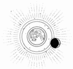

CAPÍTULO 51
Abrilis 1787
Kaine le sostuvo la cara entre las manos para devolverle el beso. La atrajo hacia sí y la rodeó con los brazos.
Helena aún seguía llorando mientras lo besaba, mientras recorría con los dedos el contorno de su rostro y la curva de su mandíbula. Quiso memorizar todos los detalles: su pulso, que latía bajo las yemas de los dedos; sus labios, presionados contra los suyos; su sabor.
Cerró los ojos para asimilarlo todo. Ese momento. Al menos le quedaría esto.
Se lo había ganado.
Entonces, de repente, se obligó a dar un paso atrás y se separó de él.
—Tengo que atender a los demás.
Esta vez no intentó detenerla. Pero al salir no encontró al resto del equipo como esperaba. Los necrómatas los habían trasladado a un rincón más apartado.
A Helena le temblaron los dedos cuando comprobó si tenían pulso. Seguían vivos, aunque Luc ardía de fiebre.
—¿Cómo salimos de aquí? —preguntó mientras revisaba las lesiones. Intentó identificar cuán graves estaban sus compañeros y cuánto le costaría devolverles la consciencia y ponerlos en marcha.
—Por este túnel. Girad a la derecha, luego otra vez a la derecha y después todo recto. Hay unas compuertas en la parte norte.
—¿Donde soltaron a la quimera? —Recordaba ese sitio.
—Tendréis que echarlas abajo, pero podéis salir por ahí.
Helena asintió.
—Tienes que irte antes de que los despierte.
—Lo sé —afirmó, pero no se movió. Se quedó allí, inmóvil, hasta que Helena alzó la vista para mirarlo. Sus ojos brillaban en la oscuridad, como si la luz de la luna se colara bajo la tierra. Le tocó la mejilla, le alzó la barbilla y la besó con suavidad—. Usa el anillo, llámame si me necesitas.
La chica quiso decir que lo haría, pero no consiguió hacerlo.
Kaine era el espía del que dependían. Y ella era…
No era su carcelera. No, ese papel le correspondía a Crowther.
Ella era…
Una prisión.
—Vete —le instó en su lugar. Kaine desapareció por uno de los túneles, seguido por sus necrómatas, silenciosos como espectros.
Primero, despertó a Sebastian, ya que pensó que mantendría la calma y sería más fácil de manejar. También sabría qué hacer. Buscó entre los suministros que les quedaban. Helena había perdido las dos dagas y todo lo que tenía en la bolsa estaba contaminado de aguas residuales. Solo seguía funcionando una de las antorchas, que proyectaba una débil luz en la oscuridad.
Cuando despertó, Sebastian se incorporó en silencio y contempló la cara inerte de Luc mientras ella le recolocaba el hombro y curaba algunas heridas superficiales, que habían dejado de sangrar por el tiempo. Después, la miró.
—¿Qué ha pasado?
Helena negó con la cabeza.
—No lo sé. Perdí el conocimiento y, cuando desperté, todos estabais inconscientes. Me daba miedo que aparecieran más inmarcesibles, así que os traje a todos aquí.
Sebastian le lanzó una mirada acusatoria.
—Helena, sé que usaste la nigromancia. Es imposible que nos trajeras tú sola a todos.
La chica comenzó a negarlo.
—Reanimaste a Soren. Jamás habría sobrevivido a ese hachazo.
Helena se quedó inmóvil. No sabía si decirle que había sido Soren quien se lo pidió o si eso empeoraría las cosas.
—Por eso te trajo, ¿verdad? Ya me lo imaginaba.
Ella no respondió. La muerte de Soren era una herida demasiado reciente para asimilarla aún. No se sentía con fuerzas ni para pronunciar su nombre sin echarse a llorar.
—¿Sigue… por aquí? —La voz de Sebastian sonó esperanzadora.
Helena sintió que se le formaba un nudo en la garganta.
—No, ya… ya no está. Lo siento.
No habría fuego sagrado que liberara el alma de Soren de su cuerpo. En algún punto del río, se descompondría en la tierra, atrapado para siempre. Lila jamás volvería a ver a su hermano. Ni siquiera en la otra vida.
Sebastian permaneció en silencio durante un largo rato.
—A los demás les diremos que los trajimos aquí entre los dos.
Alister tenía sangre seca en las comisuras de los ojos, las orejas y la nariz, por haber abusado de la transmutación. Lo despertó con cuidado, pero, en cuanto recobró la consciencia, se llevó las manos al cuello e intentó arañárselo. Miró a Helena con los ojos desorbitados.
—¿Qué ha pasado? —preguntó entre bocanadas de aire.
—No lo sabemos —respondió Sebastian inclinándose sobre él—. ¿Te encuentras bien? Tenemos que ponernos en marcha antes de que nos quedemos congelados. Luc está muy mal.
—¿Dónde está Soren?
—Murió en combate —se limitó a decir Sebastian—. Marino, ¿puedes despertar a Penny?
Penny tenía la pierna destrozada; le habían arrancado los tendones a mordiscos. No había forma de salvar la extremidad. Helena anestesió los nervios y soldó el hueso para que al menos pudiese apoyarla. Penny ni siquiera gritó cuando despertó. Se limitó a frotarse los ojos y se incorporó con esfuerzo.
Wagner no tenía ni un rasguño. Cómo no, el muy cobarde. Al menos, no tendría que gastar energías curándolo.
Helena intentó despertar a Luc, cuya fiebre no hacía más que subir. Aunque parecía imposible, el calor corporal se incrementaba por momentos. Quiso bajarle la temperatura, pero su cuerpo la rechazaba y la fiebre escalaba, imparable. Lo había medicado en exceso.
Cuando por fin recobró el conocimiento, se puso a gritar, y el sonido de los gritos reverberó por los túneles.
—¡Déjalo inconsciente! —exclamó Sebastian acercándose—. Mantenlo frío. Tendremos que cargar con él.
Por suerte, olieron el aire fresco que llegaba desde más adelante, porque Helena no podría haber explicado cómo sabía por dónde debían salir.
Sebastian tenía un medallón enredado que funcionaba igual que el anillo de Helena. Lo usó para enviar un código al Cuartel General.
De vez en cuando, oían ecos por los túneles: gritos, rugidos, chapoteos en el agua. Avanzaron en silencio. Helena empezó a preocuparse por si Kaine habría logrado salir sin problemas, y luego por si el único motivo por el que no se encontraban con nadie era porque él los estaba protegiendo entre las sombras.
Cuando llegaron a las compuertas cerradas, Alister abrió un boquete en el muro de piedra. Al hacerlo, un torrente de agua helada los inundó, pero consiguieron salir a través de la corriente con cuidado, manteniendo el equilibrio mientras trepaban.
Una niebla densa los recibió al otro lado, que se apartó ante la aparición de un barco de contrabando de poca eslora. Se dirigía hacia ellos en silencio.
Sebastian soltó un suspiro de alivio.
—Althorne.
El general Althorne los contempló con dureza mientras el barco echaba el amarre. Sus hombres descendieron al agua y acudieron al rescate del maltrecho grupo sin hacer ruido ni chapotear lo más mínimo.
—¿Dónde está Soren? —preguntó Althorne con el semblante tenso, vigilando cómo llevaban a Luc al interior del barco.
—Muerto en combate —respondió Sebastian sin añadir más.
Uno de los hombres cargó en brazos a Penny. Alister se subió a bordo por sus propios medios, aunque le temblaban las manos cuando se limpió la sangre fresca de los ojos. Estaba a punto de desplomarse.
Althorne miró a Luc con una expresión que oscilaba entre la preocupación y el alivio.
—Tendremos que mantenerlo atado hasta que lo examinen.
Helena señaló hacia Wagner.
—Lo encontramos en una celda. Creo que Crowther lo estaba buscando. No te fíes de él, mató a Sofia Purnell.
Althorne asintió y dos de sus hombres se acercaron a apresar a Wagner. El hombre gruñó, pero no se resistió. Era evidente que prefería estar cautivo en manos de la Resistencia.
—Estáis todos bajo custodia por haber incumplido órdenes —anunció Althorne en cuanto el barco zarpó. No lo dijo con rencor.
Habían salvado a Luc; cualquier castigo sería solo una formalidad.
Helena se dejó caer sobre la cubierta del barco. El viaje se sucedió casi sin darse cuenta y, al llegar, amarraron en un muelle escondido y los hicieron subir unas escaleras y entrar en la parte trasera de un camión.
Cuando llegaron al Cuartel General, Penny, Alister y Luc fueron llevados directamente al hospital. A Wagner lo metieron en una celda. Helena y Sebastian fueron examinados y, al confirmar que no tenían ninguna herida grave, los escoltaron a sus habitaciones. Allí los encerraron bajo llave y un par de guardias montaron vigilancia en la puerta.
A Helena no le hizo gracia estar confinada en el hospital, aunque allí disponía de suero y expansores de plasma. Con manos temblorosas, se quitó los ropajes mojados y hechos jirones, y se dio una ducha para deshacerse de la suciedad de los túneles y la nieve derretida.
Cuando desapareció todo rastro de lo vivido, se sintió extrañamente desconectada, como si en algún momento de la batalla hubiera abandonado su cuerpo y no fuese capaz de regresar. Ahora que volvía a estar en su habitación, le parecía que todo había sido un sueño.
Soren no estaba muerto. Era imposible.
Cuando saliera de allí, lo vería en el hospital, sentado al lado de Luc.
Al recordarlo muerto en sus brazos, notó cómo se desgarraba la tela de su mente, como si el hilo que le había devuelto a la vida se hubiese roto en cuanto desapareció la conexión entre ambos. La persona que conocía y el cuerpo que había reanimado estaban tan unidos que su partida le había causado un daño físico.
No podía estar muerto.
Había sido una pesadilla.
Se contempló las manos. Por algún motivo, esperaba que estuvieran manchadas o sucias por haber usado la nigromancia.
¿Qué diría Sebastian en el Consejo? Tendría que contar la verdad en su informe. En cuanto saliera a la luz, habría consecuencias.
Habría cometido un delito menor si hubiera asesinado a Soren. El asesinato se consideraba un crimen mortal, mientras que la nigromancia era un crimen en esta vida y también en la siguiente.
Helena guardó todas sus pertenencias en su baúl y esperó sentada.
Entonces escuchó que alguien llamaba a la puerta. Se puso en pie, preparada.
—¡Helena! ¡Helena! ¡A Luc le pasa algo! —Era Elain la que estaba fuera—. ¡Te necesitamos en el hospital!
El temor a que la apresaran se esfumó por completo.
—¿Qué ha pasado? —Helena abrió la puerta y los guardias retrocedieron para dejarla salir. Corrió junto a Elain hacia los ascensores.
—Hemos hecho todas las pruebas pertinentes y nos hemos asegurado de que no lleva ningún talismán. Pero sus órganos… están contaminados. No sé qué le han hecho. Hemos intentado revertir los daños, pero no se regeneran. Estábamos tratando de bajar la fiebre cuando Pace me pidió que lo despertara, pero entonces empezó a gritar. Y ahora no para, ni tampoco deja que nadie se acerque. Se está haciendo daño a sí mismo.
Luc estaba en una sala de cuarentena al fondo del hospital. Lo escuchó antes de llegar.
Tenía los ojos desorbitados, la cara demacrada y las mejillas llenas de arañazos, cubiertas de sangre. Irradiaba calor, como si todo él fuese oro derretido.
Ilva se encontraba en la puerta sin saber qué hacer, junto a Althorne, Maier, Pace y otros médicos. Aunque Ilva no paraba de hablarle, Luc parecía no escuchar nada. Los gritos cesaron cuando se desgarró la garganta hasta dejarla en carne viva. Era como si hubiera olvidado cómo funcionaba su propio cuerpo. Sufrió una convulsión en la que los brazos, las piernas, los dedos y la cabeza se le doblaron en ángulos imposibles y, acto seguido, se lanzó contra la pared.
—He traído a Helena —dijo Elain sin aliento.
Luc giró la cabeza y la miró fijamente. Abrió tanto los ojos que parecía que iban a salírsele de las órbitas. Meneó la cabeza como si fuera una serpiente.
—Hel… —pronunció como un graznido. Estiró la mano hacia ella; parecía que se había roto los dedos, pero no le importaba—. Hel…
—Ten cuidado, se comporta de forma violenta —escuchó que decía Pace. No le prestó atención.
Helena extendió la mano y entrelazó los dedos con los suyos. Luego le acarició el dorso de la cara con los nudillos. Tenía la piel tan caliente que era como si estuviera ardiendo. Aun estando rotos, Luc consiguió doblar los dedos, sin percatarse del dolor. Le agarró la mano y la acercó hacia sí.
—Estoy aquí. Dime qué es lo que sucede —dijo mientras le anestesió la mano y le arregló los dedos en un momento.
Luc tenía la mirada perdida y había empezado a estremecerse.
—Sácalo… —gimió sacudiendo la cabeza—. De dentro…
Helena posó la mano en su frente, ignorando el calor que desprendía su piel, y dejó que la resonancia se introdujera en su cuerpo, buscando el origen del malestar. ¿Qué se le había escapado?
—Hel… —dijo Luc de nuevo.
De repente, un dolor punzante le atravesó el pecho.
El mundo dio vueltas. Todo se tiñó de un rojo sangriento que inundó su cerebro. Un pitido agudo resonaba en sus oídos.
Intentó enfocar la vista, pero no podía respirar.
Se llevó la mano al pecho. Los sonidos se ralentizaban y las caras a su alrededor se deformaban.
Sintió que alguien la sujetaba. Helena soltó un grito de pánico y buscó sus cuchillos, pero no los tenía. Arañó el aire con desesperación para liberarse.
—Tranquila, Marino —le decía la enfermera Pace—. Estás bien, solo fue un susto. Te has quedado sin respiración.
El miedo la embargó por completo. Pero poco a poco la habitación volvió a su forma natural.
Estaba en el suelo, respirando con dificultad. El dolor del pecho la consumía por dentro, pero intentó darle sentido a lo que había pasado.
Luc estaba en la pared opuesta. De repente, su expresión mostraba una lucidez absoluta.
—Tú… —Tenía los ojos claros y ardientes—. Usaste la nigromancia en Soren.
La acusación flotó en el aire como la calma que precede a la tempestad. Todo el mundo se quedó muy quieto.
Helena se puso en pie.
—Lo siento —expresó con voz rasgada; le costaba hablar. Sus pulmones se esforzaban por respirar, pero le dolían las costillas. Cayó de rodillas y estuvo a punto de vomitar sobre el suelo del hospital—. Intenté curarlo. Lo siento.
—Estaba vivo. ¿Por qué no lo curaste? —La voz de Luc sonaba desgarrada por el dolor.
No había respirado lo suficiente para explicarse, para describir lo rápido que murió Soren, que incluso él mismo sabía que moriría y le había pedido que lo hiciera.
—Lo siento, Luc.
—Fuera… —Ya ni siquiera la miraba. Tenía la mirada perdida y se tambaleaba.
—Luc, estás enfermo…
—¡Fuera! —Cerró los ojos con fuerza y, de nuevo, empezó a temblar. Cada vez respiraba más rápido, como si estar en la misma habitación que Helena lo estuviera sacando de quicio—. ¡Fuera! ¡Fuera! ¡Fuera!
Empezó a arañarse el pecho entre alaridos, abriendo surcos en la piel como si quisiera arrancarse el corazón con las manos.
—¿Luc? —interrumpió otra voz.
Lila estaba en la puerta, apoyada en una muleta, y Rhea a su lado para ayudarla a caminar.
En la cara y en el pecho se distinguían perfectamente los puntos de sutura de sus cicatrices. Luc abrió los ojos con asombro al escucharla.
—Lila… —susurró, con la voz rota por el dolor y un alivio profundo, como si hasta ese momento no hubiera creído que ella siguiera viva.
Algunos intentaron detenerla, advirtiéndole en voz baja que tuviera cuidado, pero Lila se separó de su madre y corrió hacia Luc desesperada. En cuanto soltó la muleta, se dejó caer en sus brazos, apoyándose con fuerza en él.
—Te dije que corrieras —le dijo abrazada a él. A Luc le temblaban las manos cuando acarició el corte que le atravesaba a Lila la cara. Lila tocó con suavidad los rasguños que se había provocado él mismo en el pecho—. ¿Qué te han hecho?
Luc negó con la cabeza y la abrazó con más fuerza. Enterró la cabeza en su hombro mientras la rodeaba con los brazos.
Fue un momento tan íntimo que dolía contemplarlo. Si quedaba alguna duda de por qué Luc se había entregado, se disipó en ese instante.
Alguien tocó el codo de Helena. Cuando levantó la vista, vio que Ilva le señalaba la puerta con un gesto.
Ella se puso en pie y se escabulló en silencio antes de que Luc reparara en su presencia de nuevo. Cuando pasó junto a Rhea, la mujer apartó la mirada, evitándola.
Al final, Lila logró que Luc se metiera en la cama y aceptara que Pace y Elain lo examinaran de nuevo. Incluso accedió a que le pusieran una vía intravenosa en el brazo y a tomar la medicina que le bajaría la fiebre.
Helena se sentó en una camilla de la sala principal del hospital con una vía intravenosa en el brazo, mientras Elain le arreglaba una fractura del esternón y extendía un bálsamo sobre el moratón que le ocupaba todo el pecho. Por último, le trató la parte posterior de la cabeza, donde se había golpeado al chocar con la pared.
No era la primera vez que un paciente le causaba alguna lesión, pero esta vez todo era distinto.
Luc jamás la perdonaría por lo que le había hecho a Soren. Lo había dejado destrozado.
La cortina que envolvía la camilla se apartó para dar paso a Ilva. Elain permaneció allí hasta que la mano derecha del principado la fulminó con la mirada; entonces huyó. Helena se cerró la camisa sin levantar la mirada.
—Estamos recibiendo los informes de lo ocurrido —comunicó Ilva sin emoción alguna.
Helena no se inmutó. ¿La llevarían a juicio ahora? ¿O esperarían a que la guerra terminara?
—¿Qué te han contado? —preguntó en voz baja.
Ilva carraspeó.
—Luc ha perdido la razón. No podemos fiarnos de su versión de los hechos, dado que no solo está gravemente herido, sino que además está muy medicado. Alister y Penny han declarado que Soren Bayard murió protegiéndolos. Sebastian Bayard… —se detuvo un momento—. Sebastian Bayard lo ha corroborado, y afirma que fuisteis vosotros dos quienes pusisteis a salvo a los demás cuando la corriente de agua arrastró a la gran mayoría de los atacantes.
—¿Y qué más? —insistió Helena.
—Lucien… ha debido de alucinar con la supuesta reanimación de Soren Bayard. Quizá solo cayó al suelo por un instante. Es imposible saberlo en el caos de una batalla. La cuestión es que habéis llevado a cabo un rescate heroico. Habéis salvado al principado, aunque hemos pagado un precio muy alto. Es la voluntad de Sol.
Helena sabía que debía sentirse agradecida, pero también era consciente de que no estaban mintiendo para protegerla. Todo formaba parte de la historia oficial. Daba igual qué hubiera sucedido en realidad, lo importante era lo que creyese la gente.
—Los juramentos de Soren y Sebastian están por encima de las órdenes del Consejo —prosiguió Ilva—. Alister y Penny solo obedecían a un superior directo. Tú recibirás una amonestación en tu expediente militar, pero, como eres sanadora, no formas parte del ejército. Matias será quien decida qué castigo mereces. Hasta entonces, estarás fuera de servicio. Creo que lo mejor es que te mantengas al margen hasta que hagamos circular la historia oficial.
Helena volvió a su habitación y se dejó caer sobre la cama. El cansancio la envolvió como una ola imparable. Al principio solo hubo oscuridad y olvido, pero después el paisaje de su mente se fue transformando.
Se estaba hundiendo, cada vez más profundo. Unos dientes mordieron su piel, unas manos la arañaban, aferrándose a sus extremidades y destrozándola. Aun así, Helena no dejó de luchar. Unos dedos fríos rasgaron su carne y se clavaron en sus huesos. Intentó resistirse, pero era demasiado.
Sintió cómo se le partían los huesos, cómo los dientes penetraban en la carne. El tendón de la rodilla cedió. En la boca, unas manos húmedas se metieron tan al fondo que no podía cerrarla. La mandíbula se fracturó, dejando la garganta al descubierto. Todavía estaba luchando cuando quedó sumergida bajo el agua.
Helena se despertó de repente, luchando por respirar mientras se arañaba la garganta con las manos.
«Solo ha sido un sueño. Un sueño, eso es todo», trató de decirle a su corazón desbocado.
Pero no había sido un sueño, sino un recuerdo. Los recuerdos post mortem de Soren estaban grabados a fuego en su mente como si fueran propios: claros, lúcidos, cargados de detalles.
No sabía que la nigromancia era así, que jamás se libraría de la persona que había reanimado. No le extrañaba que los nigromantes se volvieran locos. ¿Cómo podían mantener la cordura si tenían en su interior la mente de los muertos?
El hueco que había dejado Soren se había convertido en un pozo de culpa infecta. Helena intentó con toda el alma reanimarlo, y ahora solo le quedaba algo muerto y putrefacto. Todo el mundo decía que la nigromancia era una maldición y advertían sobre sus consecuencias, pero en ese momento Helena estaba tan convencida de que la necesitaban, tan absorta en el futuro, que no se había parado a pensar en cuánto le afectaría en el presente.
Permaneció tendida en la cama, aunque aún sentía los dedos fantasmas que la despedazaban y el frío implacable de la nieve derretida. Le robó las mantas a Lila y se acurrucó bajo ellas para intentar dormir y huir de la falta de vida que Soren le hacía sentir en su interior. Cada vez que cerraba los ojos, veía en su mente los últimos recuerdos y sensaciones de Soren.
A pesar de que no había recuperado su capacidad de sentir dolor o emociones, su propia mente se encargaba de llenar esos vacíos con un terror fantasma que la hacía estremecer hasta tal punto que parecía que su mente se rompía, dividida en dos realidades.
Lo único que la anclaba al presente era el dolor, así que empezó a pellizcarse y a arañarse. No era suficiente; necesitaba algo más intenso.
Parpadeó y se descubrió a sí misma sosteniendo uno de los cuchillos de Lila, a unos milímetros de clavárselo en el antebrazo.
Lo dejó caer y salió corriendo de la habitación, aunque apenas veía en los pasillos desiertos de la Torre. Era de noche y reinaba un silencio sepulcral; casi todos ya se habían ido a dormir. La calma le resultó escalofriante, pero a ella la consumía una obsesión implacable.
Salió a trompicones, con la esperanza de que el aire fresco le devolviera la cordura.
Lumitia pendía en el cielo, brillante como un sol blanco en medio de un abismo negro.
A Helena le dolieron los ojos con solo mirarla. La sublimación siempre ponía nervioso a cualquiera, pero Helena ya estaba al borde de la locura. La sublimación solo lo empeoraba.
Cerró los ojos y sintió que se ahogaba de nuevo, que unas uñas le hacían surcos en la piel.
Kaine.
Kaine sabría qué le ocurría. Él lo entendería. Usaba la nigromancia, así que debía de conocer cómo ayudarla.
Sin pensarlo dos veces, se dirigió al Reducto. En realidad, debía llegar allí en tiempo récord, ya que quedaba poco para el toque de queda y todavía tenía que pasar por el puesto de control.
Las calles de la ciudad parecían lazos plateados bajo el brillo de la sublimación plena, pero las sombras eran como colmillos al acecho.
«Un poco más allá», se repetía con cada paso. Hasta que cruzó el puente, donde el río rugía bajo sus pies cargado de agua, y los apartamentos surgieron ante ella.
No se detuvo a pensar hasta que llegó a los escalones.
Le había prometido a Kaine que no volvería al Reducto a menos que hubiera alguna emergencia. Era un espía; su vida corría peligro. Helena le había dado su palabra de que no se acercaría por allí salvo que se lo ordenara la Llama Eterna.
De repente fue consciente de que había puesto en peligro su tapadera, y también a él.
Se dio la vuelta.
Al no tener adónde ir, perdió la concentración.
Soren. Helena. Soren.
Sintió que se le desencajaba la mandíbula, que el aire frío y la sangre entraban en su esófago desgarrado. Unos dedos invisibles se le metieron en los ojos. El agua la estaba sumergiendo. Se estaba ahogando, pero no moría. Seguía ahogándose atrapada en un bucle infinito.
Cuando recobró el conocimiento, estaba tendida en el suelo. El cielo negro, oscuro como la tinta, se cernía sobre ella. Sin embargo, la luz de Lumitia seguía emitiendo un frío punzante que quemaba su resonancia.
—Marino, ¿qué te has hecho a ti misma?
Apenas fue consciente de que la alzaban del suelo. Unas manos cálidas le tocaron la cara y la frente alejando el frío que la asfixiaba. Se acurrucó contra ese calor.
Había perdido la cabeza. Esta vez de verdad, porque Kaine estaba delante de ella acompañado de un enorme perro con alas.
Helena nunca había sufrido alucinaciones, pero, dadas las circunstancias, aquella resultaba extrañamente reconfortante. Kaine era como un horno y, cuando se hundió en sus brazos y posó la cara en su pecho, dejó de sentir los dedos fríos y muertos de sus pesadillas.
—Soren Bayard murió y… y lo traje de vuelta, pero los demás necrómatas lo despedazaron. No dejo de revivir lo que sintió. Creo que se llevó una parte de mí consigo. ¿Cómo lo haces para soportarlo sin volverte loco? ¿Siempre estaré así?
Kaine le levantó la barbilla con una mano para mirarla a los ojos. A la luz de la luna, el color gris resplandecía casi tanto como la propia Lumitia, y su cabello brillaba con el mismo tono plateado.
—¿Habías usado la nigromancia alguna vez? —Ella negó con la cabeza—. Y supongo que nadie te explicó cómo hacerlo, ¿verdad? —Exhaló el aire con lentitud y comprobó la temperatura de su frente con el dorso de la mano—. Tuviste suerte de que fuera alguien conocido. Estás entrando en shock.
A Helena se le escapó una risa nerviosa. Por supuesto que nadie le había contado cómo funcionaba la nigromancia.
Kaine le chistó y la atrajo contra su pecho para evitar que el recuerdo de unos dedos putrefactos clavándose en su piel le erizara todo el vello del cuerpo.
—Intentaste resucitarlo, ¿verdad? Idiota. Estás congelada.
Helena no se resistió cuando la acercó a su perro gigante.
En realidad, ahora que lo veía de cerca, no era un perro, sino un lobo de ojos brillantes y amarillentos, pero tenía el tamaño de un caballo de guerra y las alas de una…
No conocía ningún animal que tuviera unas alas así de grandes.
Kaine la alzó y la sentó sobre la montura, justo detrás de las alas, y luego se aupó para colocarse a su espalda. Helena cerró los ojos y se apoyó en su cuerpo, aunque un escalofrío la hizo encogerse al sentir de nuevo los dedos gélidos desgarrándole la piel. La criatura tomó impulso; sus músculos se le tensaron bajo el espeso pelaje y, de repente, se lanzó hacia delante con su salto que casi hizo que Helena cayera.
Y, sin más, estaban volando.
El viento le azotaba la cara con fuerza. Sintió que los ojos se le volvían hacia atrás. Apenas era consciente de nada más salvo de que Kaine estaba a su espalda y el frío viento rugía en sus oídos.
Entonces empezó a resbalarse, las piernas le flaquearon, y Kaine la sostuvo antes de que cayera. Volaban a tanta altura y la luna emitía una luz tan intensa que se veía incluso más allá de las montañas. Jamás había estado tan alto.
Miró a su alrededor. Estaba en un balcón, a solas con Kaine. Por primera vez en años, sentía una leve distancia de todo lo que la atormentaba. Desde allí, la isla Este se extendía a lo lejos, destrozada tras tantos años de guerra, iluminada bajo la luz de la luna.
El aire era escaso, como si estuvieran en las montañas, y el mundo parecía sumido en un silencio de ensueño.
Helena extendió la mano para que la luz plateada bañara su piel.
—¿Crees que esto es lo que quiere mi subconsciente? —preguntó, y se asomó para ver el faro de la Torre de Alquimia, que brillaba como un sol dorado en miniatura—. ¿Escapar de la guerra contigo?
Kaine mostró una expresión indescifrable cuando la apartó de la barandilla. Detrás de ellos había una puerta oscura, y él la guio para atravesarla y salir al pasillo. Tras el brillo plateado de la ciudad, sus ojos tuvieron que adaptarse a la oscuridad.
—¿Y qué es lo que quieres? —preguntó Kaine.
La voz parecía provenir de la penumbra.
Helena sintió que le ardían los ojos y extendió una mano para palpar la pared con las yemas de los dedos.
—Quiero dejar de estar siempre sola —confesó. Era más fácil ser sincera en la oscuridad—. Quiero amar a alguien sin pensar que, si lo descubrieran, acabaría sufriendo. La gente que me quiere siempre muere. Da igual lo que haga, nunca consigo salvarlos. Tengo que querer a todo el mundo desde la distancia, y me siento muy sola.
La vista se le nubló, pero entonces la oscuridad se desvaneció dando paso a una habitación enorme iluminada por el fuego de una chimenea. Era una casa fastuosa. La residencia de los Holdfast en la ciudad había sido así, repleta de muebles dorados que refulgían bajo las llamas.
Pero, aunque era elegante, carecía de personalidad. No había nada que indicara que alguien vivía en ese sitio.
Miró hacia atrás; Kaine estaba allí. La luz de la chimenea delineaba su figura, tiñendo de tonos dorados y rojizos su ropa oscura. Aún tenía ese brillo etéreo.
—No tienes por qué estar sola —dijo.
Helena bajó la vista y deseó con todo su corazón poder recrearse en esa fantasía, sentirse un instante en calma y convencerse a sí misma de que no le haría daño.
Sin embargo, sabía que era mentira. Su mente nunca se relajaba lo suficiente para disfrutar de algo sin pensar en las consecuencias.
—¿Por qué? ¿Lo dices por ti? —preguntó con amargura. Se dirigió al fuego y se dejó caer de rodillas frente a la chimenea. Allí no podía pensar que se estaba ahogando. Negó con la cabeza—. No puedo preocuparme por ti. —Apretó el puño—. Si me preocupo por ti, no podré usarte. Y eres la única esperanza que tengo para mantener con vida a todos los demás.
Se encogió sobre sí misma y se quedó mirando cómo danzaban las llamas. En algún lugar del Reducto, Helena seguiría tumbaba en el suelo, habría entrado en shock y seguramente se estuviera muriendo de frío.
—Pues úsame —repuso Kaine. Estaba a su lado. Se acercó e intentó besarla, pero Helena se apartó.
—¡No! No, no puedo. —Sacudió la cabeza. «Despierta, Helena»—. No quiero hacerte eso. No…, tú no te lo mereces. Puedo cuidar de mí misma.
Kaine no la soltó.
—No tienes que alejarte de mí para protegerme —afirmó en un tono duro que a ella le resultaba familiar—. Podré soportarlo. Puedes dejar de sentirte sola. No voy a malinterpretar lo que somos. Sé que solo quieres tener a alguien con quien estar.
Helena buscó una puerta, una escapatoria, pero Kaine no la soltaba.
—Helena… —Se quedó petrificada al oír su nombre pronunciado en sus labios—. Yo también me siento solo.
Ella notó que se le formaba un nudo en la garganta; su corazón latía con fuerza.
—Pero no quiero hacerte daño, no te mereces…
La besó y acalló todas sus objeciones. Helena no se resistió cuando la sostuvo en sus brazos. El calor del fuego desapareció al sentir su calidez, sus labios calientes sobre los suyos, sus manos acunándole la cara. Entonces sintió la suavidad de una cama bajo su espalda, almohadas y sábanas, y atrajo a Kaine hacia sí. Buscó con los dedos los botones de su abrigo y los desabrochó, pero él le cogió las manos entre las suyas y las sostuvo cerca del pecho. Se separó de ella y le alzó la cara hacia la luz.
Helena lo contempló desconcertada mientras Kaine le posaba el dorso de la mano en la frente y le remetía las mantas como si estuviera enferma y necesitara cuidados. Cuando intentó levantarse, él se sentó a su lado y la abrazó fuerte, hundiéndole la cara en el pecho.
—La nigromancia no… no resucita a nadie —le explicó—, pero en esos momentos cuesta recordarlo. Cuando se trata de alguien que conoces, cuando sabes lo que te afectará su pérdida, crees que reanimarlo te compensará. A Bayard le diste una parte de ti misma cuando lo reanimaste. En otras circunstancias, podrías haberlo revertido para separarte de él, pero Bayard se lo llevó consigo cuando murió.
Hizo una pausa.
—Te recuperarás, aunque te dejará cicatriz. Tienes que mantenerte cuerda hasta que tu mente comprenda que no puede recrearse en ese momento. Por suerte, la animancia ayuda en estos casos.
—¿A ti te ha pasado alguna vez?
Él se quedó en silencio unos instantes.
—Me pasó algo similar, pero fue hace mucho.
Helena se hizo un ovillo a su lado y escuchó el latido de su corazón.
Estaba vivo. Lo había mantenido con vida. Encontró su mano y se la acercó a la barbilla. La sostuvo con ambas manos y trazó el contorno de sus nudillos. Después entrelazó los dedos con los suyos y se quedó así.
Levantó la cabeza para mirarlo.
Kaine no se movió, ni siquiera cuando Helena le soltó la mano para tocarle la cara. O cuando se giró un poco para rozarle la mejilla con los labios. Después, le acarició la mandíbula y le posó un beso en la sien y otro en la frente. Después, algo vacilante, se acercó un poco más y le dio un beso en la boca.
Estaba ardiendo al tacto.
Helena lo besó lentamente, hasta que Kaine la envolvió con los brazos y le devolvió el beso. No tuvo claro si se estaba aferrando a él o dejándolo marchar.
Lo primero que encontraron los dedos de Kaine fueron las horquillas de su cabello y se las quitó. Las trenzas se desplegaron a su espalda y sus dedos las peinaron hasta que tuvo todo el cabello suelto y enmarañado. La volvió a besar.
Eran besos lentos. No estaban envueltos en desdén, en prisa o en culpa, pero aun así eran desesperados, porque Kaine siempre la hacía sentir así.
Lo estaba besando como siempre había querido hacerlo. Como siempre había deseado en secreto poder hacerlo.
Podía disfrutar de esto.
Al menos por esta vez.
Se le escapó un sollozo. Kaine se detuvo, pero la chica no permitió que se alejara.
—Así… así me habría gustado que fuese —admitió—. Contigo. Me habría gustado que la primera vez hubiese sido parecido.
Kaine se quedó muy quieto.
—Lo siento. Siento que no fuera así —dijo al fin, y la atrajo hacia su cuerpo.
¿Se había comportado de esa manera alguna vez? A veces se preguntaba si era real el recuerdo de cuando lo había besado estando borracha. O si se había imaginado aquella intimidad para sentirla cuando su vida careciera de ternura.
—No importa —repuso apoyando la cabeza en su hombro.
—Claro que importa. Déjame que te lo dé ahora. —Acercó la cara de Helena a la suya y le dio un beso lento e intencionado.
Como si fuera una estrella, Kaine brillaba y se mostraba frío como el hielo cuando estaba lejos, pero, al acortarse las distancias, desprendía un calor infinito.
No despegó los labios de los de Helena mientras buscaba los botones de su camisa y el resto de la ropa; esta vez los desabrochó despacio. La tela emitió un susurro al tiempo que sus dedos recorrían su piel. Con la boca siguió la curva de su clavícula, y le echó la cabeza hacia atrás para saborear la hendidura de su garganta.
Helena le quitó la ropa con torpeza. Le temblaban las manos, pero esta vez no tenía prisa. Consiguió desabrocharle los botones uno a uno.
La trató con una ternura inconmensurable. La tocaba con suavidad y, aun así, hacía que una llama ardiera en su interior, un deseo que le dolía.
No fue demasiado rápido ni brusco, y esperó a que estuviera preparada. Era todo tan lento como ella quería.
Cuando la penetró, la miró fijamente a los ojos.
—¿Está bien? ¿Te gusta?
Helena gimió y asintió. Porque esta vez así era.
—Me gusta. No pares —respondió agarrándolo por los hombros para pegarse aún más a él. Sintió bajo los dedos las cicatrices del sello que tenía en la espalda. No sabía cómo podía mostrarse tan tranquilo con todo el poder que rezumaba bajo su piel.
Kaine colocó los antebrazos a cada lado de su cabeza, como si la encerrara, y entrelazó los dedos en su pelo. Cuando empezó a moverse, presionó la frente con la suya; sus respiraciones se entremezclaron.
Al besarla, fue como si comenzara algo que podía ser eterno.
Sucedió tan despacio que Helena estuvo a punto de olvidar que iba a más. Podrían haberse quedado así, perdidos el uno en el otro, y también habría sido suficiente. Respiró en su cuello y saboreó su piel con la punta de la lengua. Memorizó su aroma y cómo era tenerlo en sus brazos.
El mundo exterior dejó de existir. Kaine sabía cómo acariciarla con los dedos para dejarla sin respiración, besarla de tal forma que apretara las piernas alrededor de sus caderas, y moverse tan lentamente que, al principio, Helena no se percató de la tensión que se acumulaba en sus entrañas. Esa voracidad acechante.
Pero, por supuesto, aquello iba a más, y Kaine quería conseguirlo. Centró toda su atención en observar cuándo se quedaba sin aliento, qué ángulo la hacía arquear la espalda, cuándo se mordía el labio para contener un gemido, en qué momentos se estremecía. Entrelazó los dedos con los suyos y notó que Helena lo abrazaba más fuerte, tanto que le clavaba las uñas en los nudillos. Empezó a jadear más rápido.
Aumentó el ritmo, la fricción y el contacto, hasta generar una sensación más intensa y profunda que la comodidad.
Cuando Kaine deslizó la mano entre sus piernas, Helena se removió. Desapareció esa comodidad. Se quedó helada e intentó retorcerse, deseando escapar. Apartó la mirada.
—No. —No quería sucumbir al pánico, pero eso era un error—. No sigas.
Kaine apartó la mano y le sostuvo la cara para darle un beso.
—Te lo mereces. Esto es para ti.
Helena negó con la cabeza.
—No, no es cierto. —Se encogió sobre sí misma y bajó la barbilla. Empezó a hablar deprisa—: Cuando me hice sanadora, prometí que nunca… Hice un juramento… y… y cuando dijiste… lo de Luc… Si lo supiera. No puedo dejar de pensar en eso. Que… que soy una puta…
Le falló la voz.
—Perdóname. —Kaine aún tenía su mano entrelazada con la suya—. Siento mucho haberte arruinado esta experiencia. Así es como debería haber sido. Déjame que te lo dé ahora.
Helena no se movió; el corazón le retumbaba en las costillas.
—Helena, por favor.
Se limitó a asentir.
—Cierra los ojos —susurró contra su mejilla.
Helena cerró los ojos y permitió que la besara.
Ahora que no veía, podía centrarse en otras sensaciones: el peso de su cuerpo sobre el suyo, cómo se movía el aire sobre su piel. Cuando le rozó con los labios el punto de la garganta donde latía su corazón, se le escapó un gemido. Kaine le acarició los senos y empezó a moverse de nuevo.
La siguió besando mientras deslizaba de nuevo la mano entre sus cuerpos y la besó con más pasión hasta que ella relajó la mandíbula y la boca, y dejó que el placer la embargara de una forma tan intensa que arqueó la espalda. Gimió con aspereza contra sus labios.
Cada vez estaba más excitada; el fuego se encendía, crecía y se extendía por todas sus terminaciones nerviosas, por los brazos y las piernas, hasta que cerró los dedos, enredando las sábanas en el puño. Cuando Kaine se movía, cuando sus labios encontraban algún punto sensible, Helena sentía que se soltaba la tensión, nudo a nudo, hasta que estuvo a punto de deshacerse.
Se le cortó la respiración cuando luchó, tratando de recomponerse y superar el miedo a romperse. No podía hacerlo.
Si se rompía, nadie recogería los pedazos.
—No puedo… —dijo entre jadeos.
—Helena. —Los labios de Kaine le acariciaron la mejilla, la sien; respiraba de forma entrecortada—. Puedes disfrutar de la vida. Tienes derecho a sentir cosas buenas, a no estar sola. Compártelo conmigo.
Kaine le levantó una pierna para que la penetración fuese más profunda y con un ángulo distinto. La tensión fue en aumento. Apretó su cuerpo contra el suyo y la besó de nuevo.
Helena abrió los ojos de par en par y lo miró mientras su mundo se hacía trizas en esquirlas de color plata.
—Por Dios… —gimió, clavando las uñas en sus brazos—. Ah…, ah…, ah…
Llegó al orgasmo bajo su cuerpo, y él la observó hasta el último segundo.
Helena seguía tumbada, intentando recobrar el aliento, cuando Kaine aumentó la velocidad. La atrajo más hacia sí y vio que se tensaba. Cuando alcanzó el clímax, se le cayó la máscara y, por un instante, la miró a los ojos. Aunque después enterró la cara en su hombro, ella llegó a ver todo el dolor que sentía.
Cuando acabó, la abrazó con fuerza para no dejarla marchar.
Helena alzó la mirada. Kaine la estaba contemplando con expresión distante; estaba ocultando sus sentimientos. Estiró la mano y le pasó un dedo por la mejilla, en busca de algún rastro del chico que la había recibido en el Reducto la primera vez. Sin embargo, ya quedaba poco de él. Hasta su cabello se había tornado plateado.
—Creo que te he memorizado casi por completo —comentó—. Sobre todo, los ojos. Creo que he aprendido a interpretarlos.
Kaine curvó las comisuras de los labios y le cogió la mano para llevársela al pecho.
—Yo también he memorizado los tuyos —dijo al cabo de un rato. Después suspiró y apartó la mirada—. Debería haberlo sabido en cuanto te miré a los ojos. Debería haber sabido que jamás ganaría frente a ti.
La chica esbozó una leve sonrisa; le costaba mantenerse despierta. Le daba miedo que todo se esfumara mientras dormía.
—Siempre pensé que los ojos eran mi mejor atributo.
—Uno de ellos —respondió Kaine en un susurro.